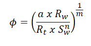

Porosidade pela Resistividade
Partindo da conhecida equação de Archie, comumente reconhecida por cálculos de resistividade da água, ela também é utilizada para a porosidade derivada da resistividade. Esta equação inclui os valores do fator de tortuosidade, resistividades da formação e da água, saturação de água, e os expoentes de saturação e cimentação. A expressão é a seguinte:
Onde:
ɸ = porosidade;
Sw = Saturação de água de zonas não-invadidas;
Rw = resistividade da água de formação à temperatura da formação;
Rt = verdadeira resistividade da formação (ou seja, indução profunda ou laterolog corrigido para invasão);
a = fator de tortuosidade;
m = expoente de cimentação;
n = expoente de saturação.
| Calcular Porosidade pela Resistividade (ɸ) | |||
|---|---|---|---|